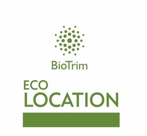

Trade Mark Journal No.2025/045 7 November 2025
WO0000001869089 (3)
Office of origin: Russian Federation
Date of International Registration:30 April 2025
Date of designation in the UK:
30 April 2025

The mark contains the colour green.
- Class 3
- Amber [perfume]; descaling preparations for household purposes; antistatic preparations for household purposes; aromatics [essential oils]; air fragrancing preparations; cake flavourings [essential oils]; flavourings for beverages [essential oils]; food flavourings [essential oils]; breath freshening sprays; canned pressurized air for cleaning and dusting purposes; balms, other than for medical purposes; basma [cosmetic dye]; lip glosses; glitter for nails; petroleum jelly for cosmetic purposes; shoe polish; cobblers' wax; cotton wool for cosmetic purposes; sachets for perfuming linen; drying agents for dishwashing machines; pomanders [aromatic substances]; adhesives for cosmetic purposes; scented water; Javelle water; lavender water; toilet water; wax for parquet floors; floor wax; non-slipping wax for floors; depilatory wax; moustache wax; tailors' wax; waxes for leather; polish for furniture and flooring; shoemakers' wax; polishing wax; massage gels, other than for medical purposes; heliotropine; cleaning gel for plumbing; dental bleaching gels; geraniol; make-up; cleaning sponges soaked in detergents; deodorants for pets; deodorants for humans or animals; depilatory preparations; air fragrance reed diffusers; scented wood; perfumes; non-slipping liquids for floors; windscreen cleaning liquids; greases for cosmetic purposes; volcanic ash for cleaning; perfumery; decorative transfers for cosmetic purposes; ionone [perfumery]; shaving stones [astringents]; eyebrow pencils; cosmetic pencils; alum stones [astringents]; adhesives for affixing false eyelashes; adhesives for affixing false hair; hair conditioners; quillaia bark for washing; beauty care cosmetics; beard dyes; colorants for toilet purposes; cosmetic dyes; starch for laundry purposes; shoe cream; polishing creams; cosmetic creams; incense; hair spray; nail varnish; hair lotions; lotions for cosmetic purposes; after-shave lotions; beauty masks; oils for perfumes and scents; oils for cosmetic purposes; oils for toilet purposes; essential oils; essential oils of cedarwood; essential oils of lemon; essential oils of citron; oils for cleaning purposes; bergamot oil; gaultheria oil; jasmine oil; lavender oil; rose oil; oil of turpentine for degreasing; whiting; cleaning chalk; almond milk for cosmetic purposes; cleansing milk for toilet purposes; musk [perfumery]; deodorant soap; shaving soap; soap for brightening textile; cakes of toilet soap; antiperspirant soap; soap for foot perspiration; soap; almond soap; mint for perfumery; make-up palettes containing cosmetics; gel eye patches for cosmetic purposes; nail art stickers; false nails; eau de Cologne; joss sticks; tooth powders for cosmetic purposes; toothpaste; lipstick cases; hydrogen peroxide for cosmetic purposes; breath freshening strips; teeth whitening strips; lipsticks; pomades for cosmetic purposes; shaving preparations; cosmetic preparations for baths; bath preparations, not for medical purposes; hair straightening preparations; hair waving preparations; laundry soaking preparations; smoothing preparations [starching]; colour-removing preparations; leather bleaching preparations; polishing preparations; mouthwashes, not for medical purposes; cosmetic preparations for slimming purposes; starch glaze for laundry purposes; preparations to make the leaves of plants shiny; eye-washes, not for medical purposes; fabric softeners for laundry use; preparations for washing; dry-cleaning preparations; paint stripping preparations; lacquer-removing preparations; make-up removing preparations; floor wax removers [scouring preparations]; varnish-removing preparations; rust removing preparations; nail care preparations; shoe wax; antistatic dryer sheets; cleaning preparations; preparations for cleaning dentures; wallpaper cleaning preparations; preparations for unblocking drain pipes; chemical cleaning preparations for household purposes; collagen preparations for cosmetic purposes; bleaching preparations [decolorants] for household purposes; laundry preparations; aloe vera preparations for cosmetic purposes; sunscreen preparations; colour-brightening chemicals for household purposes [laundry]; breath freshening preparations for personal hygiene; shining preparations [polish]; make-up powder; stain removers; nail varnish removers; vaginal washes for personal sanitary or deodorant purposes; scouring solutions; false eyelashes; baby wipes impregnated with cleaning preparations; colour run prevention laundry sheets; tissues impregnated with cosmetic lotions; tissues impregnated with make-up removing preparations; safrol; massage candles for cosmetic purposes; laundry blueing; turpentine for degreasing; potpourris [fragrances]; bleaching soda; washing soda, for cleaning; bath salts, not for medical purposes; bleaching salts; leather preservatives [polishes]; ammonia [volatile alkali] [detergent]; sponges impregnated with facial peel preparations for cosmetic purposes; sponges impregnated with make-up remover; teeth whitening strips impregnated with teeth whitening preparations [cosmetics]; sponges impregnated with cleaning preparations; fragrances; astringents for cosmetic purposes; eyebrow cosmetics; make-up preparations; sun-tanning preparations [cosmetics]; hair dyes; neutralizers for permanent waving; cosmetic preparations for eyelashes; hair grooming preparations; cosmetic preparations for skin care; cosmetics; cosmetics for children; cosmetics for animals; eyebrow dyes and eyelash dyes; cleansers for intimate personal hygiene purposes, non-medicated; douching preparations for personal sanitary or deodorant purposes [toiletries]; detergents, other than for use in manufacturing operations and for medical purposes; degreasing preparations, other than for use in manufacturing processes; bleaching preparations [decolorants] for cosmetic purposes; antiperspirants [toiletries]; toiletry preparations; cleaning preparations for leather; phytocosmetic preparations; talcum powder, for toilet use; cotton swabs for cosmetic purposes; terpenes [essential oils]; cloths impregnated with a detergent for cleaning; henna [cosmetic dye]; shampoos for animals [non-medicated grooming preparations]; dry shampoos; shampoos; soda lye; herbal extracts for cosmetic purposes; extracts of flowers [perfumes]; ethereal essences; badian essence; mint essence [essential oil]; creams for leather.
Individual entrepreneur Zabrodina Inna Markovna
Representative: Olesya Ermakova, RF Patent attorney №1370, "INTELIGHT" LLC,, a/ya 273, RU-630090 Novosibirsk, RUSSIAN FEDERATION